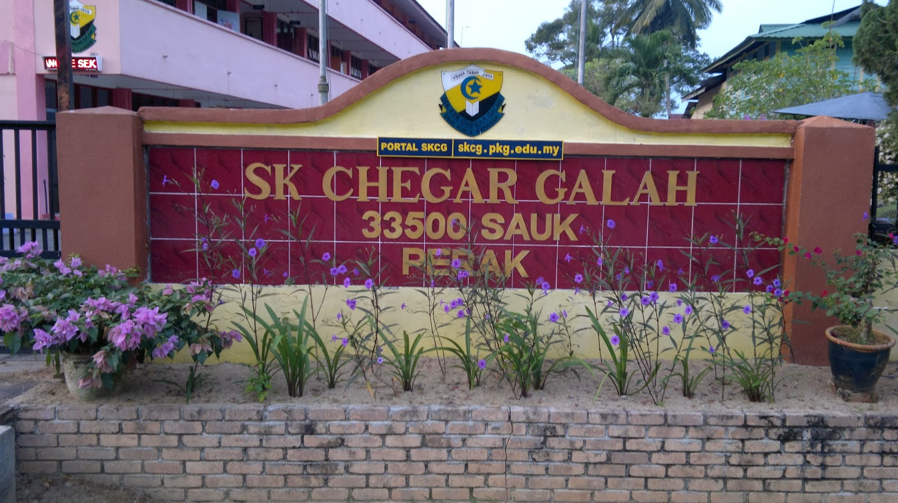

My Primary School
This is my first school when I start my study. My primary school name is Sekolah Kebangsaan Chegar Galah. This school located at sauk, Perak. I started my study at this school from 2007 until 2012. There a lot of experience especially when I young. All the memories that I kept when I study at this school will always in my mind.
